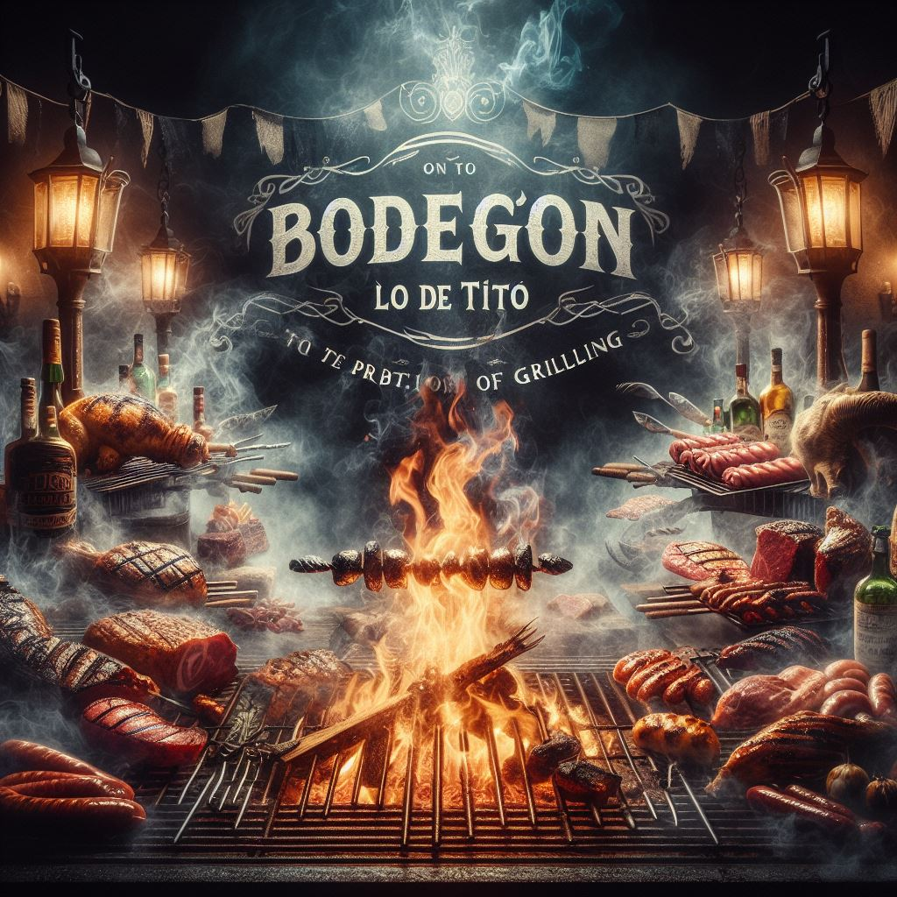
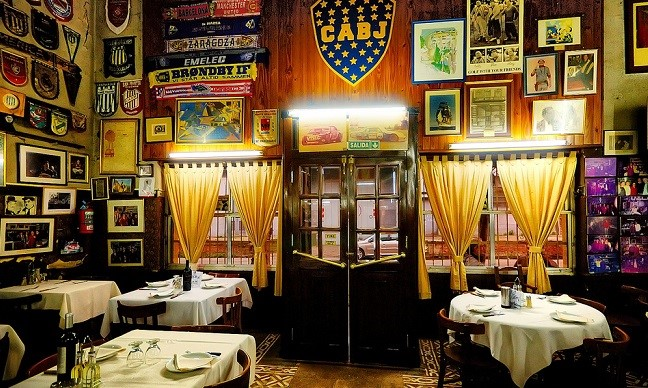

Nuestra historia
En 1931, Tito, un italiano lleno de sueños, llegó a Argentina buscando un nuevo comienzo. Fascinado por la cultura argentina, se estableció en el colorido barrio de La Boca. En 1978, tras décadas de trabajo, Tito abrió "Lo de Tito", un bodegón que rápidamente se convirtió en un ícono del barrio. Ofreciendo recetas italianas tradicionales y una ambientación nostálgica, "Lo de Tito" se convirtió en un lugar querido por todos. Hoy, su legado vive a través de su deliciosa comida y su cálida hospitalidad, recordando siempre los inicios humildes de un hombre que convirtió un sueño en realidad.